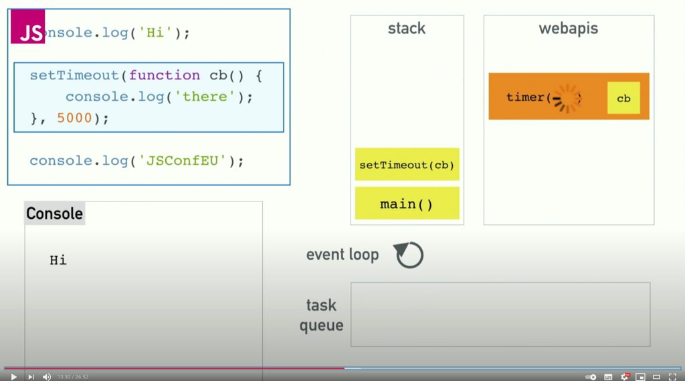
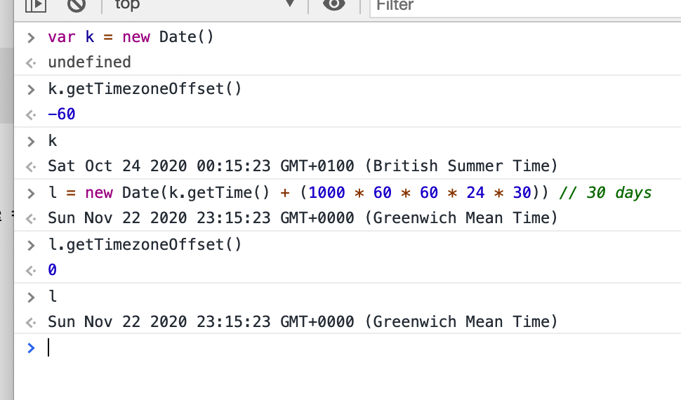

Table of Contents
Semantic release
Event loop

https://youtu.be/8aGhZQkoFbQ
g(What the heck is the event loop anyway? | Philip Roberts | JSConf EU)
Useful
Awesome JavaScript
Regex
https://regex101.com/
https://regexr.com/
lastIndex
lookbehind & lookahead
backward reference
to read
nth backreference
https://javascript.info/regexp-backreferences
About Promises
g(You're Missing the Point of Promises)
mouseenter, mouseleave, mouseover, mouseout, input[type="range"]
hover
gist (UMD - browser global & node module (singleton))
findLast
manipulation
pregQuote
https://github.com/stopsopa/nlab/blob/master/src/pregQuote.js
Map
Set
g(mdn Implementing basic set operations)
https://developer.mozilla.org/en-US/docs/Web/JavaScript/Reference/Global_Objects/Set
scroll to bottom
split - escape character
stackoverflow source
is window scrollable
Polyfill
https://ungap.github.io/
inheritance
htmlencode htmldecode
https://alligator.io/js/class-composition/
debounce throttle
/research/js/008-inheritance.html
instance or function
uniq
Date months
serializeError
trim
DateTime tricks:
async await & try catch
react-datepicker display as UTC
Interesting thing is that .getTimezoneOffset() method is returning different values depending how much you offset Date() object: 
Proxy getter
Event Delegation
Extract computed css property value
Parsing get parameters, location.search
fetch
Observer pattern
read
https://levelup.gitconnected.com/top-lessons-learned-from-working-with-a-10x-developer-51de12383e25
https://medium.com/javascript-in-plain-english/stop-using-objects-and-arrays-to-store-data-289c3edaaa33
random
randomize shuffle array
flow
encodeFunctionToString & decodeFunctionFromString